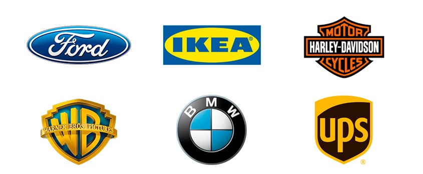

| Gerenciamento de sistemas de desing gráfico por GLPI: | Suporte a equipes criativas por GLPI: | Manutenção de equipamentos de mídia por GLPI: | Exemplo: |
| Gerenciar domínios de informações financeiras e administrativas | Centralizar informações, gerir chamados e automatizar processos | fornecer recursos, rastrear problemas, gerenciar garantias e etc |  |